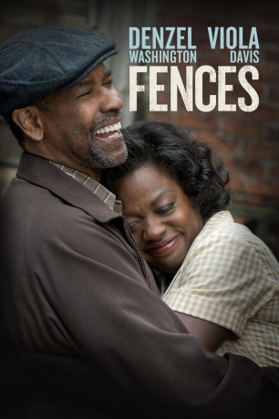

#6435 Fences
Auszeichnungen: 1 Oscars gewonnen für 3 Oscars nominiert 1 GoldenGlobes gewonnen 3 BAFTA-Awards gewonnen
 gesehen am 23.06.2017
gesehen am 23.06.2017
 
 IMDB-Wertung: 7.3 / 10
IMDB-Wertung: 7.3 / 10  Tomatometer: 92
Tomatometer: 92  Metascore: 0
Metascore: 0 
Die 50er Jahre in Pittsburgh, USA: Der afroamerikanische Ex-Baseballspieler Troy Maxson (Denzel Washington) ist Müllmann und trägt schwer daran, es als Sportler nie dahin geschafft zu haben, wo er hinwollte – und auch sein Privatleben ist problembelastet. Troys Familie besteht aus Ehefrau Rose (Viola Davis), die alle von Troys Launen kennt und sie genauso erträgt wie sein erratisches Verhalten. Die Familie besteht weiter aus Sohn Cory (Jovan Adepo), einem Teenager mit Ambitionen auf eine Footballkarriere, die vom Vater dadurch torpediert wird, dass der seine eigenen sportlichen Enttäuschungen auf den Sprössling projiziert. Außerdem sind da Lyons (Russell Hornsby), Troys sanftmütiger Sohn aus seiner vorherigen Ehe, ein finanziell klammer Jazzmusiker in seinen Dreißigern, und Troys jüngerer Bruder Gabriel (Mykelti Williamson), ein Kriegsveteran. Diese Familie droht zu zerreißen, als der innerlich zerrissene Troy fragwürdige Entscheidungen trifft….
Jahr: 2016
Dauer: 138 Minuten
FSK: 6
Land: USA Studio: Paramount PicturesTonspuren: DD5.1 - ,
Untertitel: Deutsch,
Auflösung: 1080p (1920x808) Größe: 10055 MB
Genre: Drama
Regisseur:  Denzel Washington
Denzel Washington
Drehbuch: August Wilson
Soundtrack:
Darsteller:
 Denzel Washington als Troy Maxson
Denzel Washington als Troy Maxson Viola Davis als Rose Maxson
Viola Davis als Rose Maxson Stephen Henderson als Jim Bono
Stephen Henderson als Jim Bono- Jovan Adepo als Cory
 Russell Hornsby als Lyons
Russell Hornsby als Lyons Mykelti Williamson als Gabriel
Mykelti Williamson als Gabriel- Saniyya Sidney als Raynell
 Christopher Mele als Deputy Commissioner
Christopher Mele als Deputy Commissioner- Toussaint Raphael Abessolo als Troy's Father , uncredited
- Cara Clark als Student , uncredited
- Theresa Cook als Parade Participant , uncredited
- DieselDonlow als Backyard Worker , uncredited
 Mark Falvo als Commissioner , uncredited
Mark Falvo als Commissioner , uncredited Joe Fishel als Present-Day Parade Marcher , uncredited
Joe Fishel als Present-Day Parade Marcher , uncredited John W. Iwanonkiw als Troys Boss , uncredited
John W. Iwanonkiw als Troys Boss , uncredited- Daniel James als Jaywalking Pedestrian , uncredited
- Dontez James als Bike Rider , uncredited
- Malik Abdul Khaaliq als Front Yard Neighbor , uncredited
- Connie Kincer als Parade Marcher , uncredited
- Cecily Lewis als Praying woman , uncredited
- Terri Middleton als Parade Walker , uncredited
- Kelly L. Moran als Parade Participant , uncredited
 Phil Nardozzi als Wylie Ave Pedestrian , uncredited
Phil Nardozzi als Wylie Ave Pedestrian , uncredited- Frankie Palombi als 1970's Parade Marcher , uncredited
- Andre Tucker Jr. als Parade Marcher , uncredited
- Lesley Boone als Evangelist Preacher
- Jason Silvis als Garbage Truck Driver
- Tra'Waan Coles als Towns person , uncredited
- Kristie Galloway als Present-Day Parade Marcher , uncredited
- Aristle Jones IV als Townsman , uncredited
- Chris McCail als Neighbor / Soldier , uncredited
- Kameron Peters als Soldier / Towns Person , uncredited
- Eric Rasmussen als Wylie Ave Pedestrian , uncredited
- Jeff Smith als Council Man , uncredited
Datei: X:\2016(A-F)\Fences (2016, FSK6, 1920x808).mkv seit 21.06.2017
Festplatte: HD 2016(A-Z)
 Es gibt insgesamt 147 Filme in der Gruppe '2016(A-F)'
Es gibt insgesamt 147 Filme in der Gruppe '2016(A-F)'